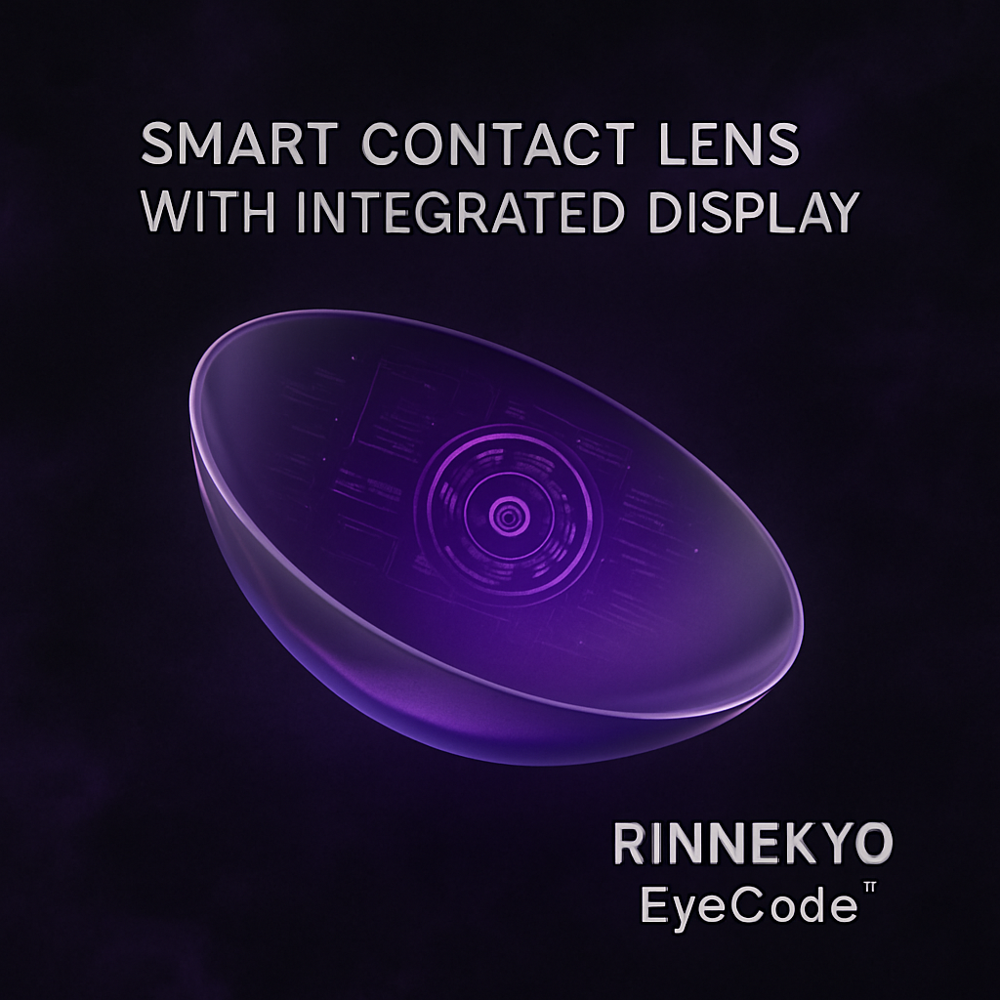
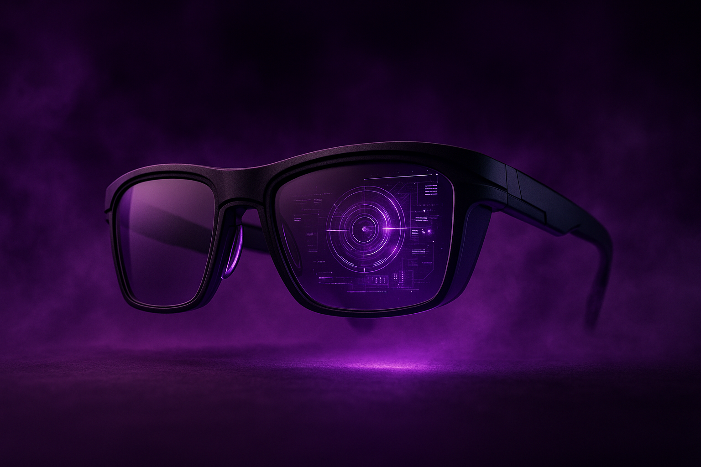
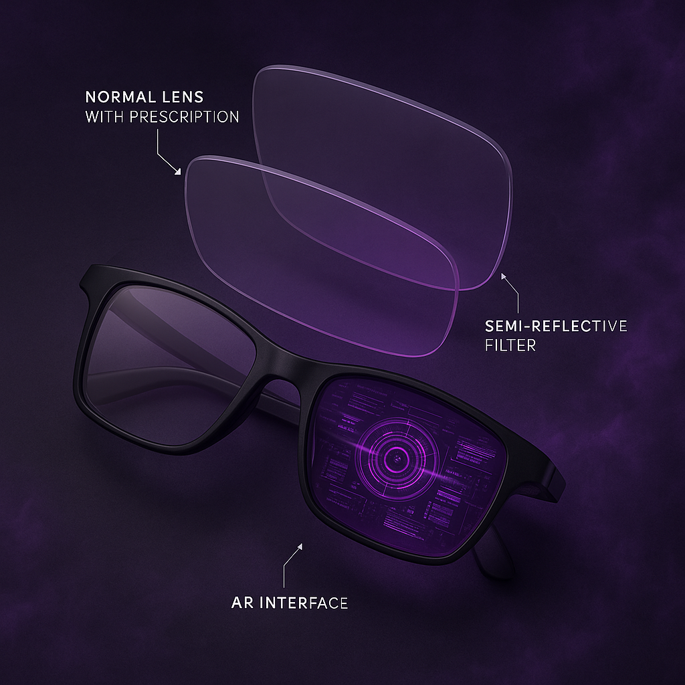

A Rinnex nasceu com o objetivo de inovar o mercado óptico, trazendo tecnologia e estilo para os clientes.
Certo dia, na mesa de um restaurante, amigos se reúniam para conversarem. Mas mal sabiam eles que daquela mesa sairia uma das suas maiores idéias da vida.
Rinnex, baseado no famoso pode ocular de Naruto, surgiu a idéia de criar uma ótica, queriam eles inovação, já que desde que o muno é mundo as óticas são sempre iguais, com o mesmo público alvo e o mesmo tipo de comércio.
Uma ótica que traz consigo inovação e tecnologia, focada em trazer para si, também, um público jovem, que mesmo sem a nescessidade de usar óculos podem comprar, por tecnologia e também proteção para com as telas, ou seja, Rinnex inova, RInnex Proteje, guiamos você cliente para o futuro!
|
 |
 |
 |